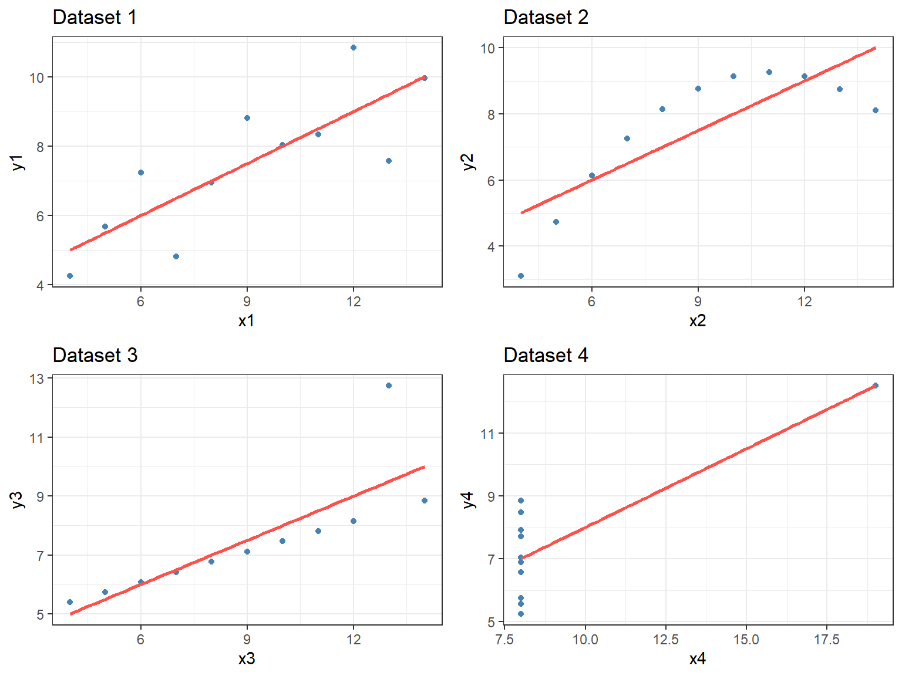
Clase 3: Visualización de Datos
Análisis de Datos y Estadística Computacional
Prof. Gabriel Duarte Zúñiga
Universidad Adolfo Ibáñez | DIAPP-2026
16 de junio de 2026
¡Bienvenid@s a la Clase 3!
Objetivo Clase 3
Esta clase tiene como objetivo aprender los principios fundamentales de la visualización de datos y aplicarlos mediante el paquete ggplot2 de R (Wickham 2015).
Como objetivos específicos se busca:
- Comprender la importancia de una buena visualización y los errores más comunes a evitar.
- Construir visualizaciones con la gramática de gráficos (grammar of graphics): datos, estéticas, geometrías, escalas y temas.
- Aplicar distintos tipos de gráficos según el tipo de variable:
geom_bar(),geom_histogram(),geom_col(),geom_line(),geom_point(), entre otros. - Controlar los elementos de un gráfico: etiquetas, escalas y temas.
- Conocer extensiones:
gghighlight, heatmaps y mapas geográficos.
La importancia de una buena visualización
¿Por qué visualizar?
El mayor valor de una imagen está en que nos obliga a notar algo que nunca esperamos ver (Tukey 1977).
Explorar: entender los datos para guiar análisis posteriores. Una visualización exploratoria es una forma de pensar y de usar gráficos como herramientas cognitivas para descubrir patrones (Wilke, 2019). → Análisis exploratorio.
Comunicar: contar una historia con propósito, simplificando lo complejo y guiando la atención del público hacia el mensaje clave. → Análisis aclaratorio.
Comunicar: foco en las perlas, no en las ostras
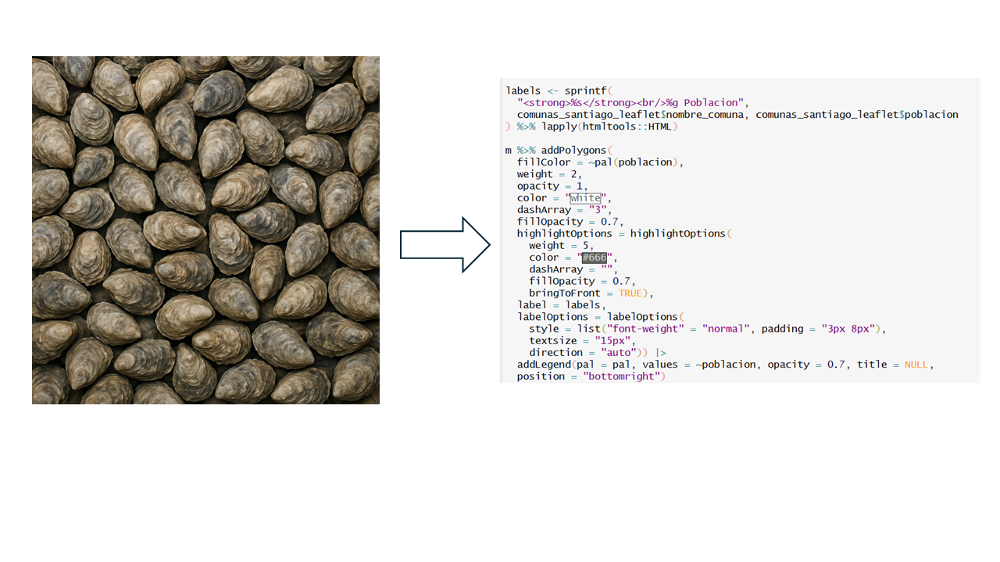
Comunicar: foco en las perlas, no en las ostras
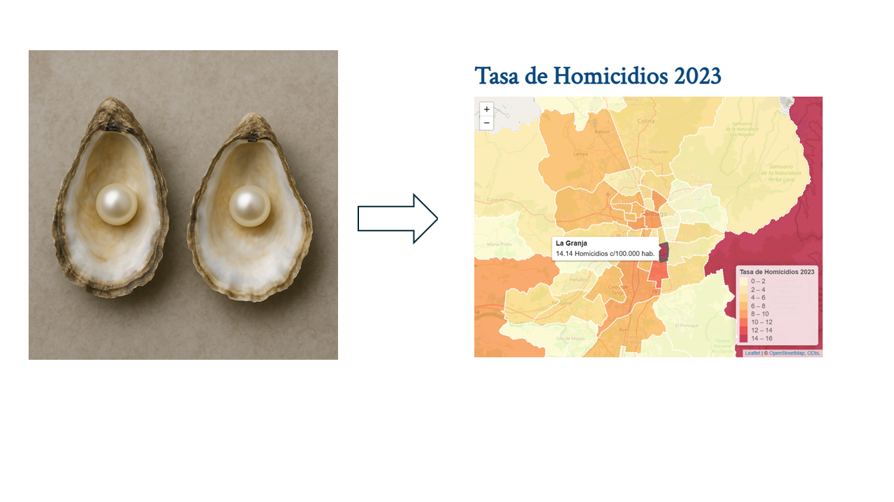
La importancia de entender los datos
El Cuarteto de Anscombe (1973) es un conjunto de cuatro datasets con estadísticas descriptivas idénticas (media, varianza, correlación) que al graficarse revelan patrones completamente distintos.
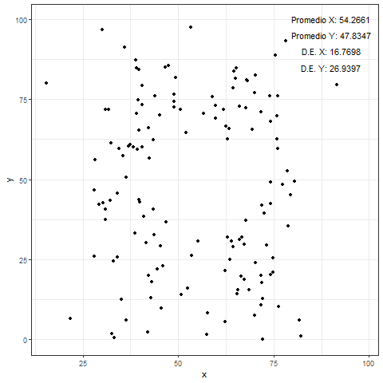
El cuarteto de Anscombe
| x1 | x2 | x3 | x4 | y1 | y2 | y3 | y4 |
|---|---|---|---|---|---|---|---|
| 10 | 10 | 10 | 8 | 8.04 | 9.14 | 7.46 | 6.58 |
| 8 | 8 | 8 | 8 | 6.95 | 8.14 | 6.77 | 5.76 |
| 13 | 13 | 13 | 8 | 7.58 | 8.74 | 12.74 | 7.71 |
| 9 | 9 | 9 | 8 | 8.81 | 8.77 | 7.11 | 8.84 |
| 11 | 11 | 11 | 8 | 8.33 | 9.26 | 7.81 | 8.47 |
| 14 | 14 | 14 | 8 | 9.96 | 8.10 | 8.84 | 7.04 |
| 6 | 6 | 6 | 8 | 7.24 | 6.13 | 6.08 | 5.25 |
| 4 | 4 | 4 | 19 | 4.26 | 3.10 | 5.39 | 12.50 |
| 12 | 12 | 12 | 8 | 10.84 | 9.13 | 8.15 | 5.56 |
| 7 | 7 | 7 | 8 | 4.82 | 7.26 | 6.42 | 7.91 |
| 5 | 5 | 5 | 8 | 5.68 | 4.74 | 5.73 | 6.89 |
Lección principal
Mensaje principal
¡Confiar únicamente en medidas estadísticas resumidas sin una visualización adecuada puede conducir a conclusiones erróneas o incompletas!
Por eso es importante visualizar los datos antes de empezar a modelar.
Lo que deberíamos buscar
- Mostrar los datos y no mentir con estos.
- Contar una historia (¿una relación? ¿causalidad? ¿un patrón? ¿un quiebre?).
- Transmitir y convencer. No hacer cherry picking.
- Minimizar aspectos innecesarios que desvían la atención del público.
- Las visualizaciones deben complementar el texto y tener suficiente información para “sobrevivir por sí mismas”.
Atributos preatentivos
El cerebro solo puede procesar un cierto número de atributos de forma instantánea (pre-attentive attributes). Los principales son: forma, posición, color y tamaño.
Queremos buscar la variación justa en estos atributos para enfocarnos en lo que importa.
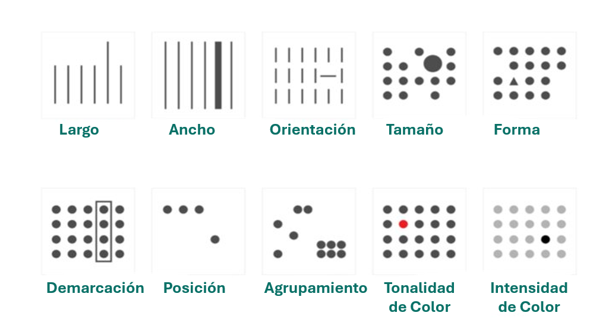
¿Cuántos 3 hay?
¿Y ahora?
Error #1: Violar el principio de proporcionalidad
The principle of proportional ink
Los tamaños de las áreas sombreadas en una visualización deben ser proporcionales a los valores de datos que representan.
En particular, este principio no se cumple en los gráficos de barra cuyo eje y no parte en 0.
Error #2: No entregar contexto
- Cuando mostramos una evolución, es importante preguntarse: ¿comparado con qué?


Error #2: No entregar contexto
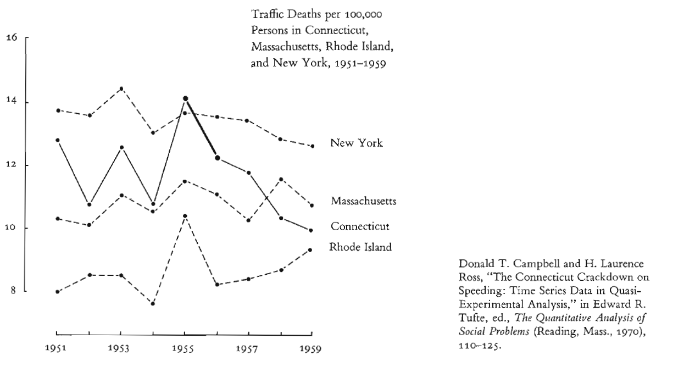
Error #3: Mostrar demasiada información
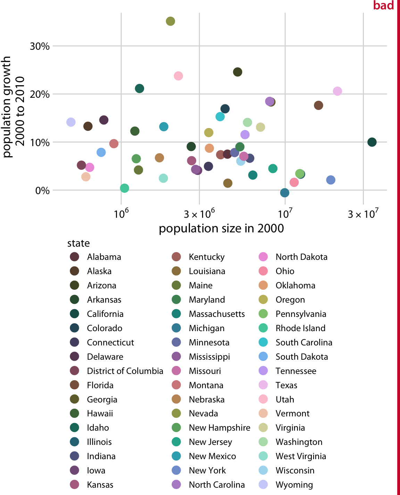

Reducir las categorías de color y etiquetar directamente mejora significativamente la legibilidad (Wilke 2019).
Construyendo visualizaciones con ggplot2
ggplot2
¿Qué es?
- Un paquete de R para producir gráficos estadísticos basado en la grammar of graphics, que permite componer gráficas combinando componentes independientes.
¿Cuál es su ventaja?
- Permite trabajar iterativamente, añadiendo capas al gráfico, haciendo más fácil la transición entre una idea a un gráfico real.
Grammar of Graphics

- Data: los datos a graficar.
-
Aesthetics (
aes): mapean variables a atributos visuales (posición x/y, color, forma, tamaño). -
Geoms (
geom_): los objetos geométricos que se dibujan (puntos, líneas, barras). -
Scales (
scale_): controlan los ejes y leyendas. -
Facets (
facet_): dividen el gráfico por subgrupos. -
Theme (
theme_): controlan los aspectos estéticos del fondo.
La estructura básica en 3 pasos
-
Especificar los datos:
ggplot(data = datos) -
Especificar los aesthetics:
aes(x = ..., y = ...) -
Agregar un geom:
+ geom_point()
Construyendo capa por capa
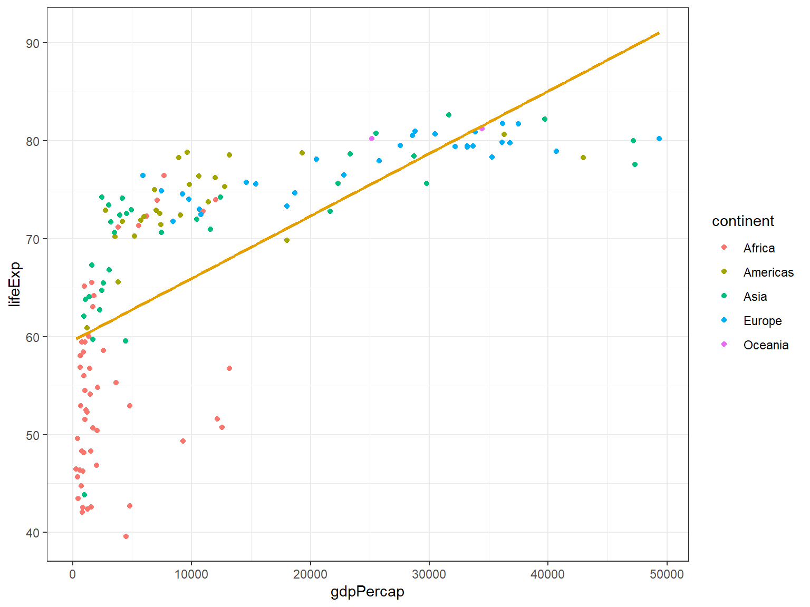
💻 Ejercicio 1: Histograma
Usando gapminder (año 2007), construya un histograma de la esperanza de vida (lifeExp). Rellene las barras de azul y use 10 intervalos.
Visualizaciones según el tipo de dato
| Nº Variables | Tipo | Geom recomendado |
|---|---|---|
| 1 | Categórica | geom_bar() |
| 1 | Cuantitativa |
geom_histogram(), geom_density()
|
| 2 | Categórica + Categórica | geom_bar(position = "dodge") |
| 2 | Cuantitativa + Cuantitativa |
geom_point(), geom_line()
|
| 2 | Categórica + Cuantitativa |
geom_col(), geom_boxplot()
|
Aplicaciones: tipos de objetos geométricos (geom_*)
Barras para datos categóricos: geom_bar()
-
geom_bar()cuenta las observaciones por categoría de manera automática, por lo que no necesita especificar enaes()el eje y:
Barras agrupadas y apiladas
Con position = "dodge" dentro de geom_bar() podemos agrupar las barras (ponerlas juntas) en función de una segunda categoría indicada en fill:
Con position = "fill" dentro de geom_bar() podemos apilar las barras (una encima de otra) en función de una segunda categoría indicada en fill:
Distribuciones: geom_histogram()
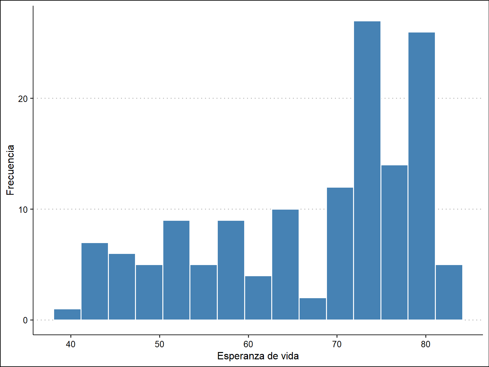
Distribuciones: geom_density() y geom_boxplot()
geom_density() es útil para ver la forma de la distribución de una variable y compararla con otras distribuciones:
geom_boxplot() es útil para visualizar las estadísticas descriptivas de posición más importantes de una variable (Q1 o p25, mediana, Q3 o p75 y outliers) y permite compararla entre distintos grupos:
🧠 Pregunta N° 1
Queremos mostrar la distribución de la esperanza de vida en 2007, comparando visualmente África vs. América en el mismo gráfico.
¿Cuál es la combinación más adecuada?
geom_bar(fill = continent)geom_histogram(fill = continent)geom_density(fill = continent) + alphageom_boxplot(x = continent, y = lifeExp)
Columnas numéricas: geom_col()
- A diferencia de
geom_bar()(que cuenta),geom_col()usa directamente el valor deycomo altura de la barra:
gap_2007 |>
group_by(continent) |>
summarise(media_vida = mean(lifeExp)) |>
ggplot(aes(
x = reorder(continent, media_vida),
y = media_vida)
) +
geom_col(fill = "steelblue") +
geom_text(aes(
label = round(media_vida, 1)),
hjust = -0.2
) +
coord_flip() +
labs(x = "", y = "Esperanza de vida promedio") +
theme_clean(base_size = 14)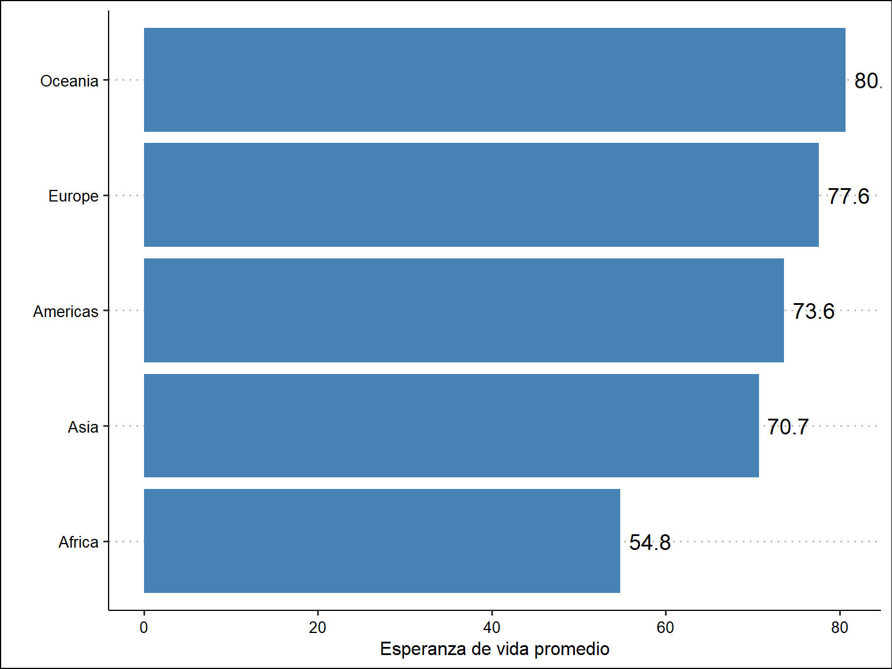
Series de tiempo: geom_line()
Con geom_line() podemos generar líneas, las cuales son muy útiles para mostrar evoluciones de indicadores a lo largo del tiempo:
gapminder |>
filter(country == "Chile") |>
ggplot(aes(x = year, y = lifeExp)) +
geom_line(linewidth = 1.5, color = "steelblue") +
geom_point(size = 2, color = "gray30", alpha = 0.8) +
scale_y_continuous(limits = c(0, 80)) +
labs(title = "Evolución de la esperanza de vida en Chile",
subtitle = "1952–2007",
x = "Año", y = "Esperanza de vida",
caption = "Fuente: Gapminder") +
theme_classic(base_size = 15)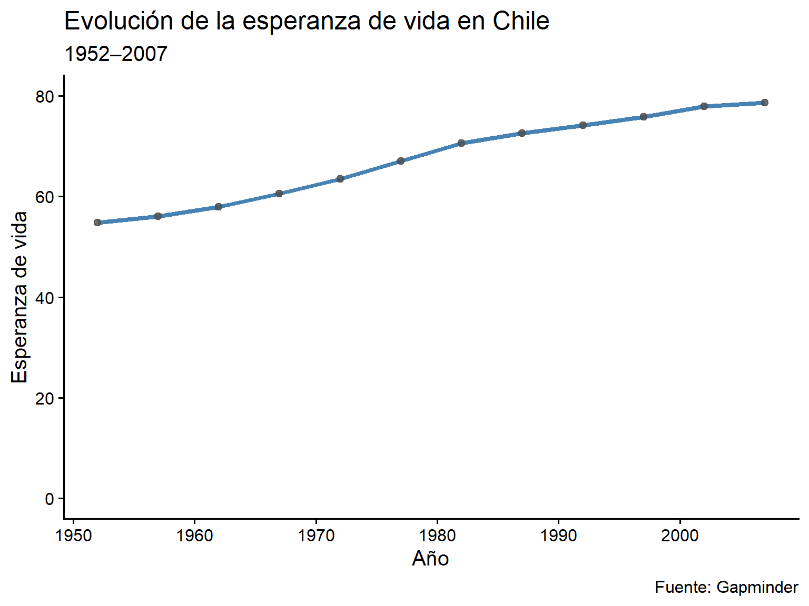
💻 Ejercicio 2: Gráficos de línea
Complete el código para graficar la evolución de la esperanza de vida promedio por continente, coloreando cada línea por continente:
Scatterplot: geom_point()
Con geom_point() y dos variables cuantitativas en x e y podemos hacer un gráfico de dispersión o scatterplot, el cual es muy útil para mostrar la relación entre dos variables numéricas. Adicionalmente, con geom_smooth() podemos ajustar una recta o curva para entender el patrón que hay en los datos:
ggplot(gap_2007, aes(x = gdpPercap, y = lifeExp)) +
geom_point(aes(color = continent), #Color por continente
alpha = 0.7, #Transparencia
size = 2.5) + #Tamaño de los puntos
geom_smooth(se = FALSE, #Sin intervalo de confianza
method = "lm", #Recta ajusta por MCO
color = "#E69F00") + #Color de la recta
labs(x = "PIB per cápita", y = "Esperanza de vida",
color = "Continente") +
theme_clean(base_size = 14)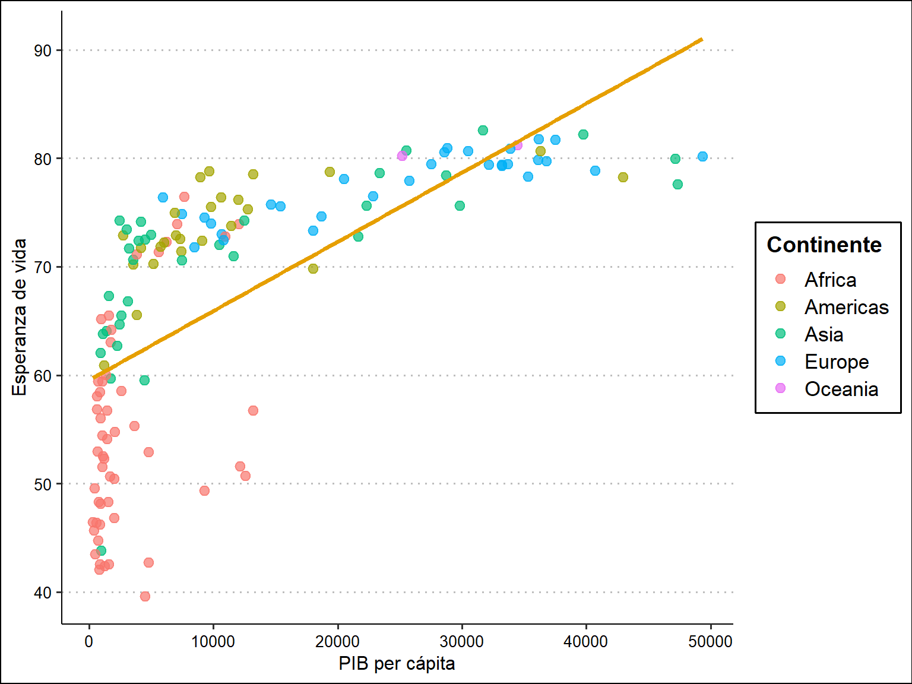
Entendiendo el nivel del aes()
En qué nivel del aes se fija el color determina qué capas lo heredan:
Controlando elementos
Etiquetas: labs()
-
labs()permite definir todos los textos del gráfico en un solo lugar:
Escalas: scale_*()
Las funciones scale_*() controlan los ejes y leyendas. Por ejemplo, con scale_x_continuous() indicamos que el eje x es una variable continua y con sus argumentos de labelsy breaks podemos especificar el formato en que se muestran las etiquetas y los quiebres o cantidad de etiquetas que aparezcan. Por último, si se ha fijado un color o fill dentro de un aes(), las funciones scale_color_*() o scale_fill_*() permiten usar paletas de colores predefinidas:
ggplot(gap_2007, aes(
x = gdpPercap,
y = lifeExp)
) +
geom_point(aes(color = continent)) +
scale_x_continuous(
labels = label_number(
big.mark = ".",
decimal.mark = ","
),
breaks = seq(0, 50000, 10000)
) +
scale_color_brewer(palette = "Set2") +
labs(x = "PIB per cápita",
y = "Esperanza de vida",
color = "Continente") +
theme_bw(base_size = 14)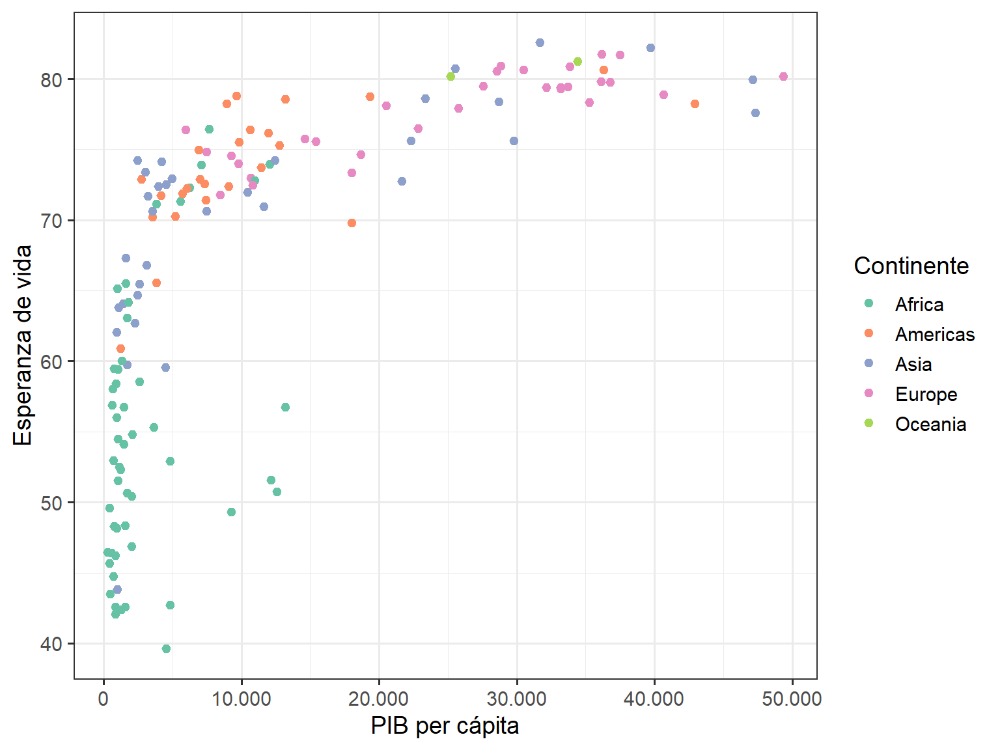
Temas: theme_*()
Los temas controlan los aspectos no relacionados con los datos: fondo, grillas, fuentes, etc. Algunos temas populares:
-
theme_minimal()— limpio, sin bordes -
theme_classic()— solo ejes, sin grilla -
theme_bw()— fondo blanco con bordes
-
theme_clean()(ggthemes) — minimalista -
theme_economist()(ggthemes) — estilo The Economist
Tip
Pueden personalizar cualquier elemento con theme(). Por ejemplo, theme(legend.position = "bottom") mueve la leyenda abajo, y theme(plot.title = element_text(face = "bold")) pone el título en negrita.
🧠 Pregunta N° 2
Tenemos el siguiente gráfico y queremos que el eje x muestre los valores del PIB per cápita con punto como separador de miles (convención chilena). ¿Qué función usamos?
¿Cuál es la opción correcta?
labs(x = label_number(big.mark = "."))scale_x_continuous(labels = label_number(big.mark = '.', decimal.mark = ','))theme(axis.text.x = element_text(big.mark = '.'))geom_text(aes(label = format(gdpPercap, big.mark = '.')))
Subgráficos por grupo: facet_wrap()
La función facet_wrap() crea una cuadrícula de gráficos, uno por cada grupo de una variable, permitiendo comparar visualmente los datos entre categorías de forma rápida y ordenada. Con la función vars como primer argumento se pueden especificar las variables por las cuales se quieren generar las combinaciones de subgráficos. Con el argumento scales es posible dejar que la escala de los ejes x e y se ajusten automáticamente a partir de la distribución de datos en cada subgrupo:
Exportar gráficos: ggsave()
-
ggsave()guarda el último gráfico producido en un archivo:
Tip
dpi = 300 asegura resolución de impresión. bg = "white" fuerza fondo blanco cuando el tema tiene fondo transparente (como theme_minimal()).
💻 Ejercicio 3: Scatterplot y tendencia
Construya un scatterplot con PIB per cápita vs esperanza de vida, coloreado por continente, con una recta de tendencia por continente, títulos en español y un tema limpio:
Ejercicio Grupal (25-30 min)
Trabajarán en salas pequeñas con los datos de homicidios y pobreza preprocesados. Los detalles están en la Guía de Ejercicio Grupal N° 3 disponible en el sitio del curso.
Recuerden
- Designen a una persona que comparta pantalla.
- Intenten resolver primero y luego revisen la pauta.
- El profesor y ayudante pasarán por las salas.
Extensiones
Resaltar objetos: gghighlight
Cuando hay muchas categorías en un gráfico, una leyenda cada elemento desvía la atención del gráfico (recordar el error #3). Una solución directa es usar gghighlight() para resaltar solo lo que nos importa comunicar. Por ejemplo, veamos la evolución de la esperanza de vida en Chile dentro del continente Americano
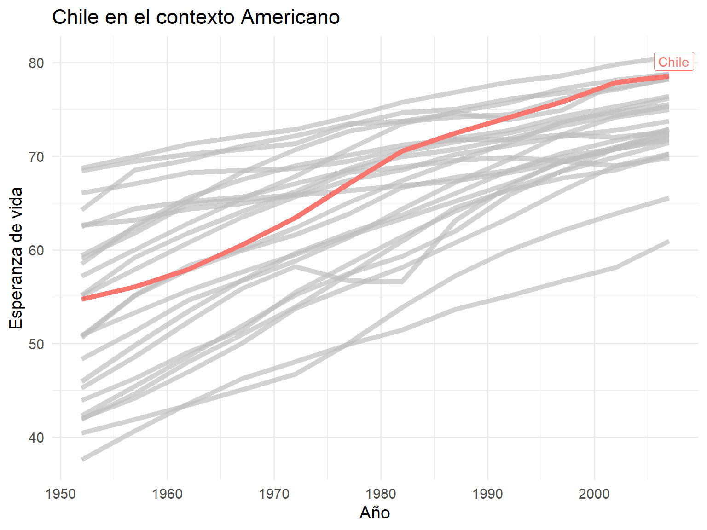
Resaltar con múltiples condiciones
- También podemos especificar que elementos resaltar explícitamente, generar una leyenda con
use_direct_labely muchas otras opciones revisando la documentación:
- Por último, podemos filtrar por valores usando condiciones o el argumento
max_highlightpara resaltar un número específico de objetos:
Heatmaps: geom_tile()
Un heatmap muestra la intensidad de una variable en una cuadrícula de dos categóricas y se puede crear mediante geom_tile()
gapminder |>
filter(continent == "Americas") |>
ggplot(aes(x = year,
y = reorder(country, lifeExp),
fill = lifeExp)) +
geom_tile(color = "white",
linewidth = 0.2) +
scale_fill_distiller(
palette = "YlOrRd",
direction = 1) +
labs(x = "Año",
y = "",
fill = "Esp. de vida",
title = "Esperanza de vida en América") +
theme_minimal(base_size = 11) +
theme(axis.text.y = element_text(size = 7))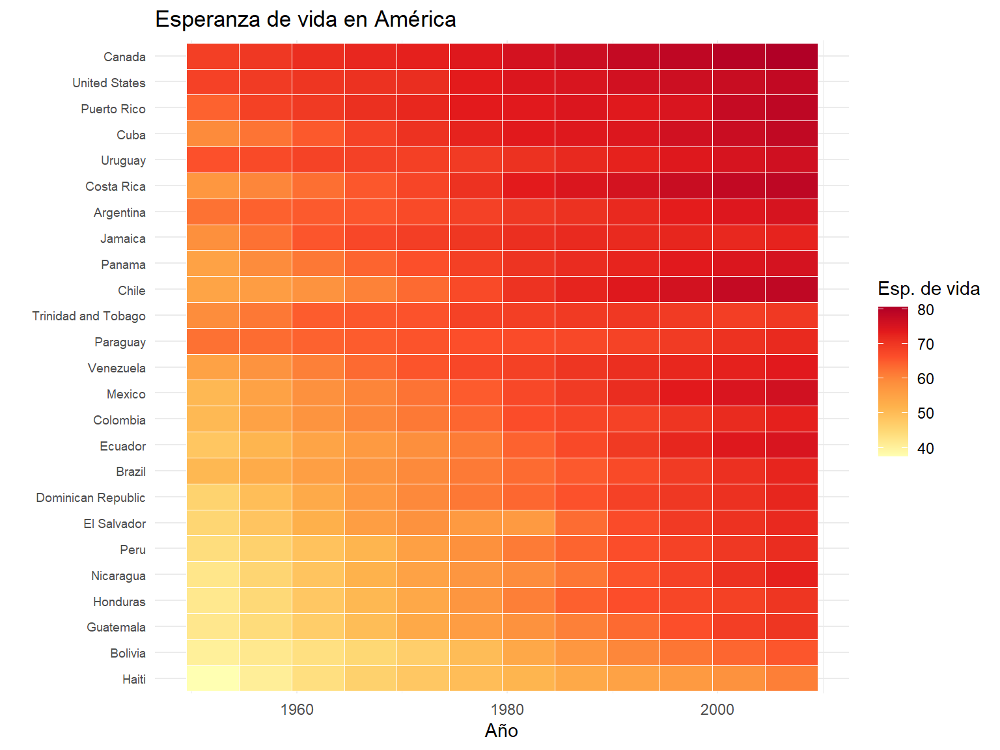
🧠 Pregunta N° 3
Tenemos un gráfico de línea con la evolución de la esperanza de vida de 25 países de América y queremos destacar solo Chile. ¿Cuál es la mejor estrategia?
¿Qué haría?
- Asignar un color distinto a cada país con
aes(color = country) - Filtrar solo Chile con
filter(country == 'Chile')y graficar - Usar
gghighlight(country == 'Chile')para resaltar Chile y dejar el resto en gris - Usar
facet_wrap(vars(country))para separar cada país
Mapas geográficos: geom_sf()
Para datos espaciales, geom_sf() dibuja polígonos desde un objeto sf. Si se combina con scale_fill_distiller(), es posible dibujar mapas temáticos coropléticos (choropleth maps) que pintan regiones geográficas en función de una variable numérica:
homicidios_rm_sf <- read_rds("data/clean/homicidios_rm_sf.rds")
ggplot(homicidios_rm_sf |> filter(provincia == "Santiago")) +
geom_sf(aes(fill = tasa_hom_2024), color = "grey100",
linewidth = 0.05) +
scale_fill_distiller(palette = "RdBu", direction = -1) +
labs(title = "Tasa de Homicidios Comunal 2024",
subtitle = "Provincia de Santiago",
fill = str_wrap("Tasa Víctimas\nde Homicidio", 15)) +
annotation_scale() + #Escala del mapa
annotation_north_arrow(location = "tl") + #Flecha de orientación. tl = top left
theme_minimal()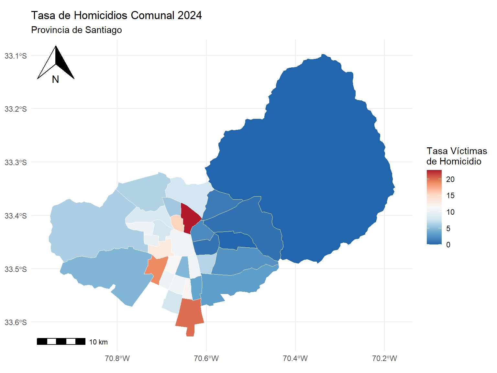
Mapas Interactivos
Con la librería mapgl es posible realizar mapas interactivos modernos y con una sintaxis moderna (también existen otros paquetes como leaflet o mapview)
Resumen y Recomendaciones
- Recuerden que los 3 elementos básicos para mostrar un gráfico en ggplot2 son:
- Datos (
data):ggplot(data) - Aesthetics (
aes):aes(x = variable_x, y= variable_y - Objeto Geométrico (
geom_*): Por ejemplogeom_line()
- Datos (
- La lógica de ggplot2 es ir añadiendo capas a la estructura definida previamente. Para añadir capas usamos
+no el pipe|> - Al momento de construir una visualización siempre piensen en la historia que quieren contar (o el mensaje que quieren transmitir) y quién es su audiencia. A veces menos es más o lo simple es más efectivo que lo complejo.
-
Awesome ggplot2 resume más de 100 paquetes relacionados con
ggplot2. En función del objetivo que tengan, pueden encontrar paquetes que facilitan la visualización de información o ejecución de análisis específicos.
Y muchos recursos más
- The R Graph Gallery
- Modern Data Visualization with R
- R CHARTS
- Publicaciones de #TidyTuesday en donde la comunidad aporta soluciones a desafíos semanales con diversos datasets.
Recapitulación
¿Qué aprendimos hoy?
| Sección | Contenido y Funciones |
|---|---|
| Principios | Explorar vs comunicar, Anscombe, errores de proporcionalidad/contexto/exceso de info |
| Grammar of graphics |
data → aes() → geom_*() → scale_*() → theme_*()
|
| Geoms |
geom_bar(), geom_histogram(), geom_density(), geom_boxplot(), geom_col(), geom_line(), geom_point()
|
| Control |
labs(), scale_x/y_continuous(), scale_color_brewer(), facet_wrap()
|
| Extensiones |
gghighlight(), geom_tile() (heatmap), geom_sf() (mapas) |
| Exportar | ggsave() |
La próxima clase aprenderemos a integrar estas visualizaciones, tablas y análisis en documentos reproducibles usando Quarto.
Bibliografía
NUSSBAUMER KNAFLIC, COLE. 2025. STORYTELLING WITH DATA: a data visualization guide for business professionals. S.l.: JOHN WILEY.
Tufte, Edward R. 2001. The Visual Display of Quantitative Information, 2nd Ed. Cheshire, Conn.
Tukey, John Wilder. 1977. Exploratory data analysis. Addison-Wesley series en behavioral science. Reading, Mass: Addison-Wesley Pub. Co.
Wickham, Hadley. 2015. «ggplot2: Elegant Graphics for Data Analysis (3e)». https://ggplot2-book.org/.
Wilke, C. 2019. Fundamentals of data visualization: a primer on making informative and compelling figures. First edition. Sebastopol, CA: O’Reilly Media.